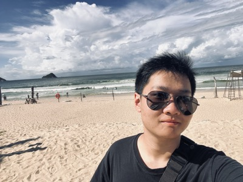

Urban Perching with a Hybrid Aerial Gripper
Contributed vision and pose-estimation pipelines for an IROS 2026 accepted aerial manipulation system that combines compliant grasping with load-bearing perching.
Project page / PDF / Details

Computer Engineering, University of Illinois Urbana-Champaign
I work on robotics systems that have to run on real hardware: computer vision, embedded software, perception pipelines, and control for aerial and humanoid robots. In June 2026, I joined BrainCo (强脑科技) as a Robot Learning Research Engineer. I am interested in reliable autonomy at the boundary between sensing, planning, and physical interaction.
Contributed vision and pose-estimation pipelines for an IROS 2026 accepted aerial manipulation system that combines compliant grasping with load-bearing perching.
Project page / PDF / Details
Built RGB-D perception and embedded sensing support for object-aware whole-body teleoperation and safety-critical humanoid control.
Manipulator bring-up and trajectory validation for a RoboMaster arm, including joint testing, communication debugging, and figure-eight task-space motion.
Task-space PD, impedance-style interaction control, gravity/friction compensation, and force control for a CRS manipulator task sequence.